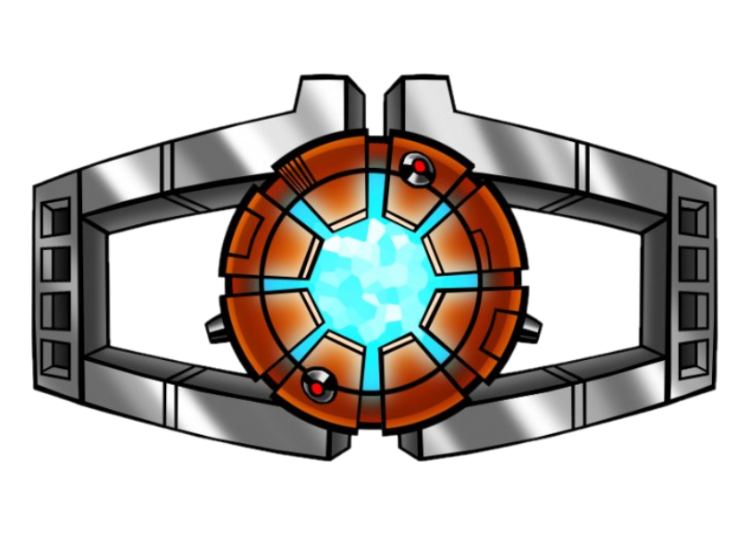

Anthem Of The Primes
Music: Scorponok-Steve Jablonsky
Lyrics: Raul Versanszki
All the Primes are now United All to Face the Gratest Darkness All the Purple Hearts and Heroes All the Brave Souls Standing Here All the Veterans and Warriors All the Chosen Ones and Soldiers All the Saviours and Defenders All for One and One for All/ All for One and Once for All/ One Shall Stand and One Shall Fall/ All for the freedom of our home /All of them ready to die All for freedom All for life One by one to give their lives One by one to join the Spark/×2
